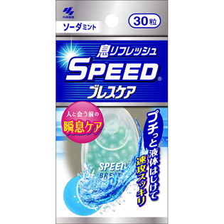
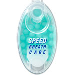

返回列表
产品名称：スピードブレスケア ソーダミント

小林製薬 スピードブレスケア ソーダミント ３０粒
メーカー 小林製薬
JANコード 4987072078983
商品の特徴
プチッとはじける液体ミント
瞬間息リフレッシュ！
- 成分・分量
- 食用油脂、ゼラチン、エリスリトール、食用サフラワー油、パセリ油、香料、グリセリン、甘味料（アスパルテーム・L-フェニルアラニン化合物、キシリトール、アセスルファムカリウム、スクラロース）、食用緑色3号
- 用法及び用量
- 1～2粒を舌の上でなめたり、噛んでつぶしたりしてお召し上がりください。